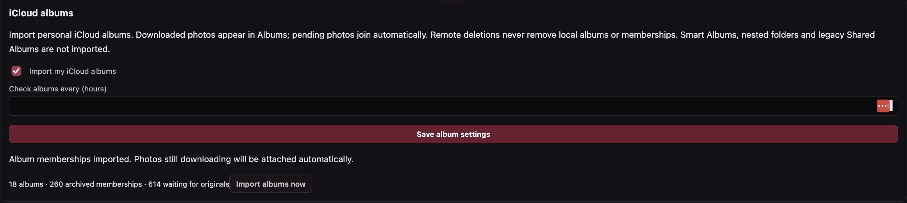

Music, by album.
Album artwork, artist and genre filters, ordered tracks and disc numbers. Edit metadata or explicitly search enabled providers. Original files and alternate copies stay yours.
MP3FLACAAC / M4AWAVOgg / Opus
INDEPENDENT. LOCAL. OPEN SOURCE.
Bring your digital life home. Archive iCloud originals, enjoy your media, and give every family member a private space.
Built on Debian. Managed on your network. Running on reclaimed QNAP hardware.

Purpose-built board support. A familiar way to manage it.
Built and exercised on real TS-431XeU hardware. Public installation and recovery acceptance are still in progress. See the exact limits →
EXPLORE THE RUNNING APPLICATION
Nine views of the real NAS interface, freshly captured.
Choose a dashboard below. Open any image for the details.


YOUR FAMILY. YOUR MEMORIES. YOUR NAS.
A path out of endlessly growing cloud storage bills. Bring your iCloud photos and videos home, keep downloaded originals even after cloud deletion, and give every family member a private place of their own.
Browse a timeline, imported iCloud albums and a location map with optional OpenStreetMap detail and an offline fallback. Keep separate personal libraries, then share a whole library, selected albums or individual memories with other NAS users. Shared collections appear separately from their own.

Personal album import · actual NAS controls ↗An alternative archive, not a drop-in replacement for every Apple feature. Live Apple-account downloads, photo previews and personal album imports have been exercised on the NAS. A whole-account completeness audit is still required before changing cloud storage. The optional unofficial connector can require MFA or renewed sign-in. Files deleted before download cannot be recovered. Automatic iPhone camera-roll backup directly to the NAS is not included; ongoing iCloud imports still require iCloud.
MY RADIO · MORE THAN RADIO
A personal listening and reading space for every account. Artwork, useful metadata, recent sessions and listening statistics bring the collection together.
Album artwork, artist and genre filters, ordered tracks and disc numbers. Edit metadata or explicitly search enabled providers. Original files and alternate copies stay yours.
Audiobooks and eBooks with covers, authors, synopses, series and collections. Browser voices offer speed and pitch controls for readable text; available voices depend on your device.
Browse shows by cover, expand their episodes, and filter by genre, publisher, date or download status. Page through results and retain the episodes you choose locally.
Explore US and Canadian internet stations by name and genre. Real station icons and colorful fallback artwork, favorites and shared read-only libraries make return visits simple.
Playback depends on browser codec support. DRM-protected books may require an authorized player or a readable companion edition. FreeQNAP does not promise 4K transcoding on this ARM NAS.
Explore My Radio, supported formats and limits →PRIVATE BY DEFAULT. SHARED BY CHOICE.
Personal files, photos, videos and My Radio stay separate for each family member. Each person can connect their own Apple account. Administrators control who can use personal apps and who can manage the NAS.
Selected albums, memories or collections ↓
How family sharing works · illustrative diagram
Use local NAS accounts, or link your own optional Authentik provider. Linked users can set a separate local NAS password for access when the identity provider is unavailable.
Share Social prepares a separate sharing copy with metadata/GPS removal selected by default. Share through supported device apps, or download the prepared copy.
Choose dedicated storage locations, add watched source folders and import from attached drives through the file desktop. Copy jobs show progress, verified bytes, speed and remaining time.
ONE NAS. MANY POSSIBILITIES.
A native Debian application, with an unprivileged web console and a tightly scoped local operation broker. Optional services stay under your control.
PERSONAL PHOTOS & ICLOUD
Download photos and videos from iCloud into a private archive. Later cloud deletions never trigger local pruning of successfully downloaded originals.
FAMILY ACCOUNTS & LIBRARY SHARING
Give each person a local account, private files, My Radio and Personal Photos & Videos—with their own optional iCloud connection. Administrators choose what each account can access.
OPTIONAL AUTHENTIK · LOCAL ACCOUNTS ALWAYS
Link your own Authentik OpenID Connect provider from the dashboard. Local and linked sign-ins use the same NAS profile, libraries and permissions.
METADATA & LOCATION EDITOR
Add a missing GPS location, correct a capture date, or edit titles, captions, creator and tags from the photo/video viewer. Use the offline map to place memories without sending coordinates to a map provider.
SHARE SOCIAL · DASHBOARD & PWA
Prepare a private sharing copy, then choose Messages, Mail or a supported social app in your device’s share sheet. Remove metadata and GPS is selected by default.
STORAGE & SHARING
Manage Linux RAID, mounted capacity, encrypted LUKS2/ext4 volumes and external USB storage. Share selected folders over SMB, NFSv4 or AFP, with explicit users and access settings.
FILE DESKTOP
Open multiple folder windows. Tile, resize, search and drag files between them. Upload, download, rename, duplicate and organize without a terminal.
BACKUP & RESTORE
Encrypted Restic repositories on local storage or pinned SFTP destinations. Schedule backups, verify their contents and restore into a separate staging location.
MEDIA LIBRARY
Cover-art browsing, plot, cast and crew. Import local NFO metadata or choose an optional TVmaze/OMDb title search. Edit details, upload artwork or capture a video frame.
NETWORK & VPN
Configure physical ports, static addresses, DHCP, routes and DNS. Add an optional isolated private LAN with reservations, client notes and block controls.
DOWNLOADS
A graphical URL and torrent queue with progress, speed and ETA. Saved sessions, partial files, pause/resume and independent retries survive engine restarts.
HEALTH & NOTIFICATIONS
Color-coded faults, a health-linked physical status LED and clear incident history. Choose rules and presets for RAID, disks, capacity, temperature, services and failed jobs.
EXTERNAL & ENCRYPTED USB
See attached devices, unlock supported volumes, browse media and eject safely. Existing LUKS volumes can be imported read/write; foreign readers have format-specific limits.
AI AGENT ACCESS & LOCAL API
Issue local API tokens with selected function-level permissions, scope and expiry. Provider-neutral agents can inspect authorized status or perform the operations you explicitly grant.
RAID & INTERRUPTED-ARRAY RECOVERY
Inspect array membership, rebuild progress and protected disk identities. Guided recovery can assess an interrupted registered RAID5 array before separately reviewed activation and mounts.
DYNAMIC DNS
Configure multiple Dynamic DNS profiles with provider-specific or custom update settings. See their last result and next update without exposing stored credentials.
HTTPS, MOBILE PWA & NOTIFICATIONS
Install the trusted HTTPS dashboard as a PWA on supported devices. Personal libraries, sharing and alerts use the same account permissions on desktop and mobile.
ACTIVITY, AUDIT & USER VISIBILITY
Account-scoped activity makes file jobs, sign-ins and operations understandable. Administrators can inspect account status, storage use and broader system activity.
BUILT FROM THE BOARD UP
The enclosure matters: fans, temperatures, drive LEDs, status light, buttons, buzzer, network ports, SATA and USB. FreeQNAP carries the board integration and the engineering record alongside the application.
Board photos, UART & boot tutorial ↗Original owner photographs retain original pixels outside opaque identifier masks. Unmeasured UART positions and voltage remain explicitly unverified.
 Original board photography · identifiers masked ↗
Original board photography · identifiers masked ↗UNDERSTAND BEFORE YOU WRITE
Installer tooling is included. A universal one-click public appliance image is not. Read the walkthrough and the recovery boundaries first.
Confirm the exact model and board. Establish verified UART wiring and serial capture. Keep adapter VCC disconnected.
Preserve original flash privately. Inspect U-Boot and test a checksum-pinned image in RAM before committing changes.
Installer stages bind operations to exact identities and require explicit destructive confirmation. No automatic pool selection.
Validate installed boot, cooling, disks and network. Set private credentials, select services, and complete backup/recovery drills.
OPEN ABOUT THE EDGES
FreeQNAP is an experimental source project for the QNAP TS-431XeU-2G-US / AL314. Similar names do not establish compatibility. It is not affiliated with or endorsed by QNAP.
The dashboard is functional and locally deployed. A feature in the source is not proof of every hardware failure mode, client, media format or recovery scenario.
Read the current status →Mirrored OS expansion, autonomous boot, SATA, RJ45, LEDs and buttons. Bounded high/full adaptive cooling and diskless watchdog-expiry tests passed; full cooling is currently selected.
OS expansion record →Two ~15 TB unencrypted ext4 volumes. Repeated direct-read checksums, cache flushes, remounts, offline filesystem checks, physical USB reconnection and a clean enclosure power cycle passed.
Results & retained limits →The interrupted data RAID5 recovery completed non-degraded and idle; two original sample files passed exact identity/hash checks. This does not prove all content or parity. Kernel installation/rollback acceptance, physical replacement, SFP+ traffic, wake and the original lockup root cause remain open.
Current acceptance status →Binary release requires clean builds, corresponding source, license review and signed artifacts. Private configurations and flash dumps are excluded. No 4K transcoding or complete flash-restoration claim.
Start with the source. Learn from the guide.
Keep control on your network.